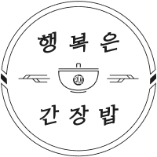
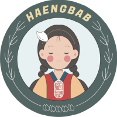
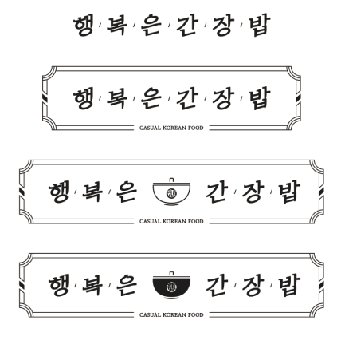
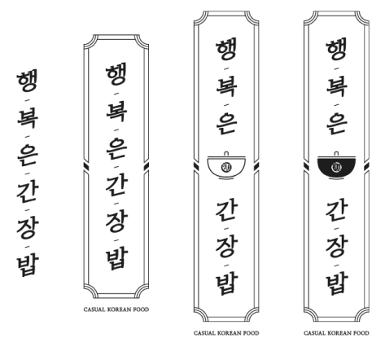

-

- 브랜드
- 브랜드 스토리
브랜드 스토리
행복은간장밥은 빠르고 간편하면서도 건강한 음식을 제공하는
간장 소스 기반의 캐주얼 한식 브랜드입니다.
따뜻한 마음과 정성이 듬뿍 담긴 한 끼 식사를 통해
바쁜 하루, 지친 일상 속에서 작지만 확실한 행복을 드리고자 합니다.
빠르고 간편하면서도
건강한 한끼
좋은 재료 본연의 맛을 살려
토핑에 따라 다양한 맛을 극대화 합니다.
Exterior & Interior
Point 1행복은간장밥이 추구하는 Young, Casual, Trendy를 표현한 감각적인 디자인
Point 2고객과 직원 모두의 동선 효율을 고려한 1인 외식에 가장 최적화된 형태의 구조
따뜻한 마음과 정성이 듬뿍 담긴 한 끼 식사를 통해
바쁜 하루, 지친 일상 속에서
작지만 확실한 행복을 드리고자 합니다.
-
엠블럼
 -
캐릭터
 -
시그니처
심볼마크
로고조합
가로형
세로형
전용색상
C39 M44 Y62
R171 g144 b103
#AB9067
C74 M72 Y75 K45
R62 g53 b47
#3E352F
전용서체
-
밝은체
행복은간장밥은 좋은 재료 본연의 맛을 살려
토핑에 따라 다양한 맛을 극대화 합니다.
Happiness is that soy sauce rice maximizes the variety of flavors depending on the toppings by making use of the original taste of good ingredients
-
나눔명조
행복은간장밥은 좋은 재료 본연의 맛을 살려
토핑에 따라 다양한 맛을 극대화 합니다.
Happiness is that soy sauce rice maximizes the variety of flavors depending on the toppings by making use of the original taste of good ingredients